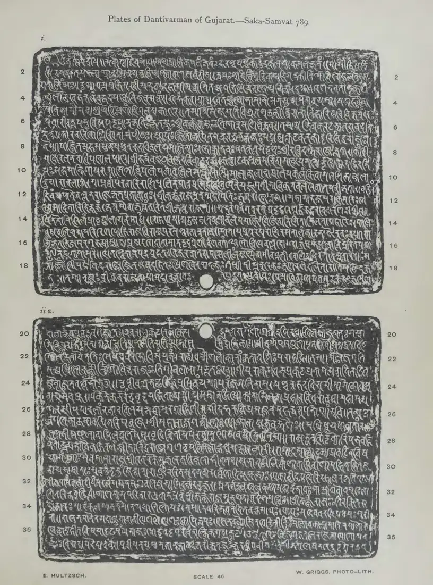
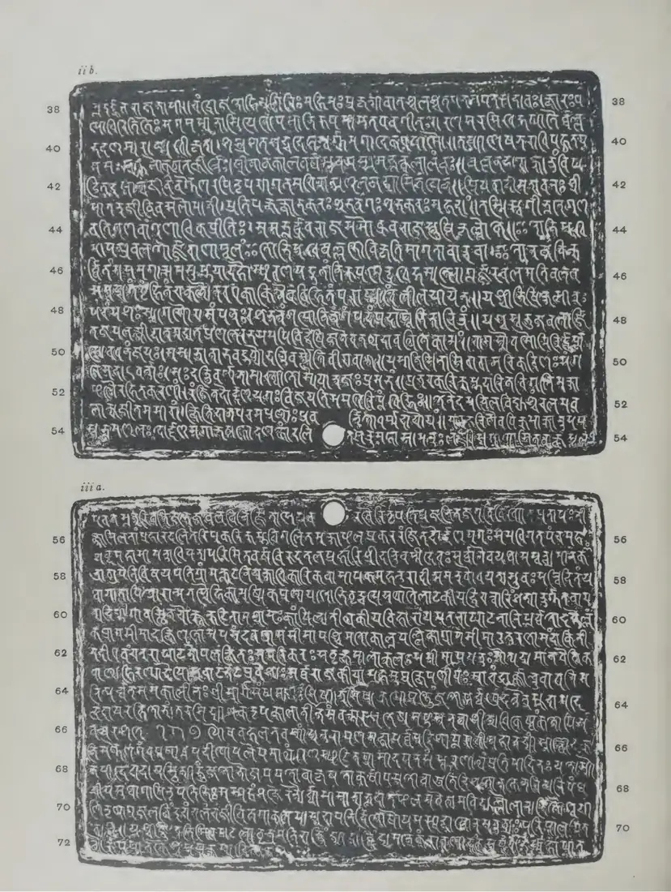

Plates of Dantivarman of Gujarat ; Saka-samvat 789
PLATES OF DANTIVARMAN OF GUJARAT ;
SAKA-SAMVAT 789.
SAKA-SAMVAT 789.
By D. R. BHANDARKAR, M.A.
These copper plates were brought to my father, Dr. R. G. Bhandarkar, from Gujarât ; but he does not know the name of the village where they were found. The plates are three in number, each measuring about 1' 1" by 9". Their edges are raised into rims for the protection of the writing. The first plate is inscribed on one side only, the remaining two being engraved on both sides. They are strung on a copper ring which measures about 3" in diameter and is about " thick. The ring had not yet been cut when the plates were sent to Dr. Hultzsch. The ends of the ring are secured in the base of a circular seal, measuring about 1" in diameter and bearing, in high relief on a countersunk surface, a much corroded figure of Garuđa, squatting and facing to the full front. The engraving is clear, bold and deep, but not well executed. Very often the letters are not fully engraved, and in a good many places they are drawn carelessly.— The language is Sanskrit throughout. There can be no doubt that the kâṇsâr has engraved the original document without understanding it, as will be seen from the numerous mistakes pointed out in the footnotes. Allowing for the misspellings and inaccuracies due to an unskilled engraver, there are certain solecisms for which the official who drew up the grant must be held responsible. There is one compound in line 55, which cannot be justified by the rules of grammar. Other grammatical mistakes may be noticed in such instances as Sarthâtailâṭakîya-dvichatvârîmšaty-ântarggata0 in line 59, -mahâparvvam=uddiśya in line 66, and so forth.— As regards lexicography, attention may be drawn (1) to the word vâsâpaka6 (1. 58) which occurs in the list of the officials and functionaries to whom the royal grantor addresses himself, and (2) to the term Talaprahâri (1. 57) which appears to have been an appellation of Dantivarman.7— In respect of orthography, it deserves to be noted (1) that the rules of saṭdhi
1 See date No. 52.
2 No 96 of the Government Epigraphist's collection for 1897.
3 Restore apara-pakshattu.
4 Read trayôdakîyum
5 See date No. 52.
6 [Compare Ind. Ant. Vol. XIII. p. 69, note 31.— E. H.]
7 [Note also sênabhôgika (l. 81), which is an older form of sênabhôga, sênabôva, etc., 'the clerk of a village or of some villages' (Kittel's Kannađa-English Dictionary). — E. H.]
are often disregarded; (2) that there is an indifference about the doubling of consonants after r; (3) that the letter b is throughout denoted by the sign for v; (4) that dh is doubled (by d) in conjunction with a following y or r in ll. 42 and 82; (5) that the vowel ri is employed instead of ri in bhúpas=trivishṭapa° (l. 6) and -Kanakádřir=iv=Éindrarájah (l. 7), and (6) gh instead of h in rája-sīnghah (l. 3); (7) that the jihvámúlíya and the upadhmáníya are used in bhrityaih=kisha(ya)dbhír= (l. 9) and in udyatah=praṇaté (l. 49); (8) that the visarga followed by s has been twice changed to that letter, in manastas=samam=éva (l. 4) and tanayas=samabhút (l. 41); (9) that the final m of a word, instead of being changed to an anusvára, is joined to a following p, bh or v in ll. 9, 25, 40, 45, 46 and 78; (10) that the anusvára before y, v and s is sometimes represented by n (ll. 3, 21, 25, 26, 58); and (11) that the sign of avagraha is employed once in l. 51.—The characters belong to the northern class of alphabets and in general agree with those of the grants of the Gujarát Ráshṭrakúṭa princes; but the sign for d in the words yadá and ára(da)dita in ll. 76 and 78 and the sign for the conjunct nn in the words dhvastin=nayann=abhimukhó (l. 2), prabhínna (l. 6), etc. are worthy of note. Another point that calls for special notice is that most of the letters of the sign-manual of Dhruvarája and one letter of that of Dantivarman at the end, and a few in the benedictory verse at the beginning, are engraved with their tops nail-headed.
The inscription is one of Dantivarman, of the Gujarát branch of the Ráshṭrakúṭa family, or, as he is described in line 56 f., 'the Talaprahári śrí-Dantivarmadéva, who has the bírudu of Aparimitavarsha, who is the lord of great feudal chiefs (mahásámanta), and who has obtained the five great sounds (mahásábda).' The inscription opens with the salutation óm óm namô Buddháya, which furnishes an indication, at the very outset, of the grant being Buddhist. It then gives one verse (which is well known from other Ráshṭrakúṭa grants) invoking the protection of Vishṇu and Śiva. Then in lines 1-49 the genealogy of Dantivarman is set forth, exactly in the same verses (with a few unimportant variants) as in the Bagumrá plates of Dhruvarája II. Then follow three verses (ll. 49-52) which are peculiar to this grant, and which tell us that Dantivarman was a younger brother of Dhruvarája II. After this there is another well known verse on the vanity of this life. The proper object of the inscription is stated in prose, in ll. 53-67. Dantivarman informs all the officials called ráshṭrapati, vishayapati, grámakúṭa, niyukta, ádhikárika, vásápaka, mahattara, etc. that, having bathed in the great rive. Púrávī, on the ninth tithí of the dark half of Pausha in Śaka-Samvat 789 (in words and in figures), on the great occasion of the Uttaráyaṇa, he granted to the vihára at the sacred place (tírtha) of Kámpilya the village of Chokkhakuṭi, situated in the north-west of, and included in, the forty-two (villages) named after Sarthátailáṭa, to be enjoyed by the succession of the pupils of the holy Áryasaṅgha, for defraying the expenses of perfumes, flowers, frankincense, lamps and ointments, and of the repairs of the temple broken in parts. The boundaries of the village granted were, in the east the village of Da[nt]ellainka, in the south the village of Apasundara, in the west the village of Kálúpalliká, and in the north the river Mandákini (Gaṅgâ). Lines 67-72 contain a request to future rulers to respect the donation, and threaten with spiritual punishment those who might resume it. Lines 73-80 quote seven of the customary benedictive and imprecatory verses. And the inscription then (from line 80) concludes thus:— "The dútaka of this (charter) is the great minister śrí-Kṛishṇabhatṭa. And this has been written by the sénabhógika Golla, the son of Ráṇappa. (This is) the pleasure of me, the glorious Dantivarman, the son of the glorious Akálavarshadéva. Also, (this is) the pleasure of me, the glorious Dhruvarájadéva, the son of the glorious Akálavarshadéva."
The gain from this inscription for the social and political history of Gujarát is considerable. In the first place, this grant, as will be seen from the above summary of the contents, was made to the Áryasaṅgha, or Buddhist community, settled at Kámpilya. This shows that Buddhism was still in the latter half of the ninth century of the Christian era a living religion, favoured by kings in Western India. Secondly, the inscription adds to the list of the Gujarát
Râshṭrakûṭa princes the name of Dantivarman, who, as stated above, is styled a mahâsâmantâ-dhîpati who had obtained the pañcha-mahâśabda. This indicates that he was ruling over some province as a minor chief. Further, as we have seen, the sign-manual of Dantivarman is followed by that of his elder brother Dhruvarâja II. From this it is plain that both Dhruvarâja II. and Dantivarman were alive when the charter was issued, and that Dantivarman was wielding power under Dhruvarâja II. This enables us to settle another point of importance, connected with the history of the Gujarât branch of the Râshṭrakûṭas. The Bagumrâ plates of Śaka-Samvat 8101 mention Kṛishṇarâja-Akâlavarsha (II.) as their donor. And to judge from their contents, which are full of misspellings and omissions, he appears to be the son of Dantivarman. Dr. Hultzsch, who edited the grant, held that this Dantivarman must be placed between Dhruvarâja II. and Kṛishṇarâja II. Dr. Bhagwanlal Indraji, however, was of opinion that this Dantivarman, the father of Kṛishṇarâja II., was identical with Dantivarman, the dûtaka of the Baroda plates of Karka.2 Now, the date of the Baroda plates is Śaka-Samvat 734, and that of the plates of Kṛishṇarâja II. is Śaka-Samvat 810, so that if, according to Dr. Bhagwanlal Indraji's supposition, we hold that Dantivarman, the dûtaka of the Baroda charter dated Śaka-Samvat 734, was the father of Kṛishṇarâja II. whose grant bears the date Śaka-Samvat 810, the son is separated from the father by no less than seventy-six years. This is highly improbable, though not altogether impossible. But our grant mentions another Dantivarman as brother of Dhruvarâja II., and its date is Śaka-Samvat 789, whereas that of Kṛishṇarâja II., as has been just stated, is Śaka-Samvat 810. Thus the Dantivarman of our grant is brought close to Kṛishṇarâja II., and there can be little doubt that Dantivarman, the father of Kṛishṇarâja II., is no other than Dantivarman, the younger brother of Dhruvarâja II., the donor of our grant. The new plates therefore show that the view of Dr. Hultzsch is correct.
As regards the places mentioned in the inscription, the Kâmpilya tîrtha is, in my opinion, to be identified with Kampil in the Kaimganj tahsîl of the Farukhâbâd district in the North-West Provinces. This Kampil, whose ancient name was Kâmpilya, was for long the capital of Southern Pañchâla and was once a sacred place of the Jainas. The river Pûrâvî is perhaps identical with the modern Pûrnâ, in the Surat collectorate. For, in an unpublished grant belonging to the Bombay Branch of the Royal Asiatic Society, the Pûrâvî is spoken of as being in the vicinity of Nâgasârikâ, which is evidently the modern Nausâri, and the river which is close by Nausâri is the Pûrnâ. The river Mandâkinî, which is mentioned in defining the boundaries of the village granted, cannot be identified with the Ganges, as we have no grounds whatever to suppose that the Gujarât Râshṭrakûṭas extended their dominions as far as the Ganges. And since the name Mandâkinî is used also to designate other rivers than the Ganges, the river Mandâkinî mentioned in these plates may have been some river in Gujarât, and the village granted was probably situated in that province. Instances of grants made to religious establishments remote from the village granted are not wanting in modern times, and there can therefore be nothing improbable in the supposition that the Buddhist vihâra at Kampil in the North-West Provinces enjoyed the income accruing from a village in Gujarât.
TEXT.3
First Plate.
1 श्रीं4 श्रीं न[मो] वृडाय5 ॥ स वीव्याद्देधसा धाम य(१)व्राभिकमलं
कृतं । हरश्च यश्च6 कान्तेंदुकलया कमलंकृतं ॥ [१*] आसीद्दिषटि-7
1 Ind. Ant. Vol. XIII. p. 65 ff.
2 History of Gujarât in the Bombay Gazetteer, Vol. I. Part I. p. 127 f.
3 From the original plates.
4 Expressed by a symbol.
5 Read वृडाय.
6 Read यश्च.
7 Read शासीद्दिषटि°.
2 मिरम्[द्य]तमंडलाग्रो ध्वस्तिन्नयन्नभिमुखो रणशर्वरोषु । भूपः शुचि[र्वि]-
धुरिवास्तदिगन्तकीर्त्तिर्गोविदराज1 इति र[ज]2
3 राजसिंघः3 ॥ [२*] दृष्टा4 चमूमभिमुखो5 सुभटाष्टहासामुन्नामित[न्स]पदि6
ये[न] रणेषु नित्यं । दष्टाधरेण दधता भृकुटीं
4 ललाटे खड्गं कल7 च हृदयञ्च निजं च सत्वं8 ॥ [३*] खड्गं करा-
ग्रान्मुखतश्च शोभा मानो म[न]स्तस्सममेव यस्य । महाहवे ना-
5 [म] निश(t)म्य स[द्य]रूय[य]9 रिपूणां विगलत्यकाण्डे ॥ [४*] तस्या-
त्मजो जगति 10विश्रुतशुभ्रकीर्त्तिरार्त्तार्त्तिहारिहरिविक्रमधा-
6 मधारी । 11भूपस्तृविष्टपन्नपानुक्तिः कृतज्ञः श्रीकर्कराज इति गोत्रमणिर्व-
भूव12 ॥ [५*] तस्य प्रभिन्नकरटच्युतदानद[न्ति]-
7 दन्तप्रहाररुचिरोक्षिखितांसपोठः । [क्ष्मा]पः क्षितौ क्षपितशत्रुरभूतनूजः
सद्राष्ट्रकूटकनकाद्रिवेंद्रराजः13 ॥ [६*]
8 तस्योपार्जितमहसस्तन[य]श्चतुरुदधिवलयमालिन्याः । भोक्ता14 भुवः शतक्रतु-
सदृशः 15श्रीदन्तिदुर्गराजोभूत् ॥ [७*] कांची-
9 [श]केरलनराधिपचोलपाण्डाश्रीहर्षवज्रटविभेदविधा[न]दक्षं । 16कर्ण्णटक[स्व]-
लमचिंत्यमजेयमन्येर्भूत्यैङ्क्षिपद्भिरभि17
10 यः सहसा जिगाष18 ॥ [८*] आ सेतोर्विपुलोपलावलिलसल्लोलोर्मिमा-
लाजलादा प्रालेयकलंकिवाम[ल]शिलाज[त]ला-19
11 क्तुषाराचलात् । आ पूर्व्वापर[वा]रिराशिपुलिनप्रान्तप्रसिद्धावधेयेने[य]ञ्जगती20
21स्वविक्रमवलेनैकातपत्रीकृता ॥ [९*] न[स्मिं]22
12 दिवं [प्र]पाते23 वल्लभराजेकृतप्रजावाधः24 । श्रीकर्कराजसूनर्महोपतिः कृष्णराजो-
भूत् ॥ [१०*] यस्य स्वभुजपराक्रमनिःशे-
13 षोत्सादितारि[दि]क्ककं । कृष्णस्येवाकृष्णं चरितं श्रीकृष्णराज[स्य] ॥ [११*]
शुभतुंगवंगतुरगप्र[वृ]द्धरेण[ङ्गं]रुद्धर[वि]करणः25 । ग्रीषे-
14 पि नभो निखि[लं] प्रावृट्कालायने26 [स्प]ष्टं ॥ [१२*] राहुष्पमा[त्मभु]-
जजातव[ला]वलेपमाजौ27 विजित्य निशिता[सि]लताप्रहारैः । पालि-
| 1 Read °गोविन्द°. | 2 Read राजसु. |
| 4 Read दृष्ट्वा. | 5 Read °सुखौ. |
| 7 Read कुलं. | 8 Read सत्त्वं. |
| 10 Read °कौत्ति°. | 11 Read °स्त्रविष्टप°. |
| 13 Read °कनकाद्रि°. | 14 Read भोक्ता. |
| 16 Read कर्णाटकं बल°. | 17 Read °मन्ये° and °यद्विरपि. |
| 19 Read °कलंकिता°. | 20 Read °धेयेने°. |
| 22 Read तस्मिन्. | 23 Read प्रयाते. |
| 25 Read °ए॒वं° and °किरणं. | 26 Read °यते. |
३ Read ° सिंहः.
६ Read ° तं सपदि.
९ Read ° स्वयं.
12 Read ° ब्बभूव.
15 Read ° दन्ति.
18 Read जिगाय.
21 Read ° बले.
24 Read ° बाधः.
27 Read ° बला.
15 ध्वजावलिशुभामचिरेण यो हि राजाधिराजपरमेश्वरतान्ततान ॥ [१३*]
पाता 1यश्चतुरम्पराशिरसनालंकारभाजो भुवः2 [च]प्याचा-
16 पि कृत[द्वि]जामरगुरु[प्रा]ज्याज्यपूजादरो3 [।] दाता मानभृ[दश]णीर्ब्रणवता
योसौ श्रिये4 वल्ल[भो] (।) भोजं5 [स्व]र्गफलानि भूरितपसा
17 स्थानञ्जगामामरे6 ॥ [१४*] येन श्वेता[त]पत्रप्रहृतरविकरत्रातवापात्म-
लीलं7 जग्मै8 [ना]सीरधूलीधवलि[त]शिरसा वल्ल[ना]खाः9 स-
18 राजौ10 । धीमज्ञोवि[न्द]राजो 11जितज[ष]दहितःप्रैणवैधव्यदत्तः12 तस्याभीत्सू-
नुरेकः 13क्षणरणदलितारातिम[त्ते]भक्तुं-
19 भः ॥ [१५*] तस्यानुजः श्रीध्रुवराज[ना]मा महानुभावः14 प्रह[तः]
प्रतापः । प्रसाधिताशेषन[रेंद्रचक्र]ः क्रमेण (।)
Second Plate ; First Side.
20 15वालार्कवपुर्व्वभूव16 ॥ [१६*] जाते यत्र च राष्ट्रकूटतिलके सङ्गपचूडा-
मणौ (।) गुर्व्वीं तुष्टिरथाखिलस्य जगतः सुस्रा-
21 मिनि प्रत्यहं । सत्य[न्स]त्यमति17 प्रशासति सति 18[क्षमामा]मसुद्रा-
न्तिका[मा]सोडर्मपरे [गु]णामृत[नि]धौ सत्यव्रताधि[ष्टि]-19
22 ते ॥ [१७*] रक्षता येन निःशेषं चतुरंभोधिसंयुतं । राज्यं ध[र्म]ेण
लोकानां कुता20 तुष्टिः परा हृदि ॥ [१८*] तस्यात्मजो [ज]गति
23 सत्यथितोरुकीर्त्तिर्गोविन्दराज इति गोत्रललामभूतः । त्यागी पराक्रम-
धन[:*] प्रकटप्रताप(।)सन्तापिताहित-
24 जनो जनवल्लभोभूत् ॥ [१९*] पृथ्वीवल्लभ इ[ति] च प्रथितं यस्यापरं
जगति नाम । यश्चतुरुदधिसुसीमामेको वसु-
25 धाम्वशे21 चक्रे ॥ [२०*] 22एकेनेकनरेंद्रवृन्दसहितान्यस्तान्ममस्तानपि
प्रोत्खातासिलताप्रहारविधरां23 वध्वा महासन्य-24
26 गे [1*] लक्ष्मी[म]प्यचलां चकार
विप्रसज्ज[न]सुहृद्वन्धूपभोग्यां26 भुवि
| 1 Read °रम्बु°. | 2 Read भुवस्त्रय्याश्चापि. |
| 4 Read श्रियो. | 6 Read भोक्तं. |
| 7 Read °ब्राततापा°. | 8 Read जग्मे. |
| 10 Read °दाजौ. | 11 Read °जगदहितस्त्रैण°. |
| 14 Read °भावोप्रहृतप्र°. | 15 Read बाला°. |
विलसत्सच्चामरग्राहिणी25 सन्मी[दु]हुरु-
॥ [२१*] तत्पुत्रो-
| 17 Read सत्यं सत्यमिति. | 18 Read चामासमुद्रा२. | 19 Read °छि०. |
| 20 Read कृता. | 21 Read °धां वशे. | 22 Read एको०. |
| 23 Read °विधुरान्बड्डा. | 24 Read °संयु०. | 25 Read °याहिषौ संसीद०. |
| 26 Read °दन्तू०. |
3 Read °दरः.
6 Read °मामरं.
9 Read वल्लभाख्यः.
12 Read °दचसस्यासौत्सून°.
16 Read °ब्बभूव.
18 Above the letter ksha of kshana and na of rana, what looks like the sign of the vowel é is engraved.
27 च गते नाकमाकम्पितरिपुत्रजे । श्रीमहाराजशर्वाख्यः खातो1 राजाभ-
वहुणैः ॥ [२२*] अर्थिषु यथार्थतां यः
28 समभीष्टफलावामिलश्चतेषे२ । वृद्धिनिनाय परमाममोघवर्षाभिधानस्य ॥
[२३*] राजाभूतत्वि[तृ]व्यो रिपुभववि-
29 भवोद्गुल्यभावैकहेतुर्लक्ष्मीमानिंदराजो गुणनृपनिकरान्तश्वसत्कारकारी३ । [रा]-
गाद[न्या]न्व्युदस्य प्रकटितविष-
30 या४ यं नृपाः५ सेवमाना राजश्रीरेव [च]क्रे सकलकविजनोद्दीततथ्य-
स्वभावः६ ॥ [२४*] निर्व्वाणावामिवाणासहितहितज-
31 ना यस्य मानाः सुवृत्तं वृत्तं जित्वान्यराज्ञां चरितमुदयवान्सर्वतो
[हिन्क]केभ्यः७ । एकाको दूमवैरिस्वलनकृतिगह[पा]-८
32 तिरी[ज्ययाशं]कुर्लाटीयं मडलं९ प[स्तन]य इव निजस्वामिदत्तं ररक्ष ॥
[२५*] सूनुर्व्वभूव१० खलु तस्य महानुभावः११ शास्त्रार्थवोधसुखला-
33 लितरित्कवृत्तिर्यो१२ गोण[ना]मपरिवारमुवाह पूर्वं श्रोकर्कराजसुभ[ग]व्यप-
देश[मु]चेः१३ ॥ [२६*] श्रोकर्कराज इति रक्षितरा-
34 ज्यभारः सारं कुल[स्य] तनयो नयशालिशौर्यः । तस्याभव[द्वि]भवनंदि-
तवन्धुसार्थः१४ (I) पार्थः सदेव धनुषि प्रथमः श[ची]-
35 नां ॥ [२७*] दानेन मानेन सदाज्ञया वा वीर्येण शौर्येण च
कोपि भूपः । एतेन तुल्योस्ति न वेत्ति१५ कोत्तिः सकौवका१६
भ्राम्यति य[स्य] लोके ॥ [२८*]
36 [स्वेच्छा]गृहीतविषया[न्*] दृढसंघभाजः17 प्रोवृत्तदृप्तरथशुल्किकराष्ट्रकूटां18 ।
उत्खातख[ङ्ग]निजवाहवलेन19 जित्वा योमोघव-
37 षं इति राज्यपदे२० व्यधत्त ॥ [२८*] पुत्रीयतस्तस्य महानुभावः कृतो
कृतज्ञः कृतवीर्यवीर्यः । वशीकृताशेषनरेन्द्रवन्दो वभूव२१
1 Read ख्यातो.
2 Read °लश्चतीषेषु.
3 Read °श्वमत्कार°.
4 To this letter yd a superfluous sign of the vowel al is conjoined.
5 Read नृपान्.
6 Read °स्वभावं.
7 The reading intended is probably हिंसकेभ्यः as in the Nausārī plates of Karka (J. B. B. R. A. S. Vol. XX. p. 182).
8 Read °कृतिसहप्रातिराज्येशशंकु°.
9 Read मण्डलं य°.
10 Read °ब्बभूव.
11 Read शास्त्रार्थवोध°.
12 Read °लितचित्तवृत्तिः । यो गौण°.
13 Read °मुचैः.
14 Read °बन्धु°.
15 Read वेति.
16 Read सकौतुका.
17 Read °दृप्तर°.
18 Read °कूटान्.
19 Read °वाहुवलेन.
20 Read °मोघवर्षमचिरात्स्वपदे in accordance with the Baroda plates of Dhruva I.
21 Read बभूव.
Plate 1 is bound after this page.
Plate 2 is bound after this page.
Second Plate ; Second Side.
38 सूनुर्द्धुवराजनामा ॥ [३०*] चंद्रो जडो हिमगिरिः सहिमः प्रकृत्या
वातश्चलश्च तपनस्तपनस्वभावः । क्षारः प-
39 योधिरिति तैः सममस्य नास्ति येनोपमा निरुपम(१)स्तत एव
गीतः ॥ [३१*] रणसरसि१ खड्गघातैर्व्वस्न-
40 भदण्डम्पराङ्मुखीकृत्य । शस्रशतशुद्धदेह[:*] स्वर्गमगादेक ए[वा]-
सौ ॥ [३२*] तस्याशेषनराधिपहृतय-
41 शसः स्वर्गलोकगतकीर्त्तेः । श्रीमानकालवर्षस्तन[य]स्मभूत्कुलालंवः२ ॥
[३३*] वल्लभभाराक्रान्तं विघ-
42 ३[टि]तदुष्टान्वजी[वि]वर्गेण४ । पितृपर्यागतमचिरान्मण्डलमद्वगासितं ये-
• [न] ॥ [३४*] प्रियवादी सत्यध[न]ः श्री-
43 माननुजीविवत्सलो मानी । प्रतिपक्षक्षोभकरः शुभतुंगः शुभकरः सुहृ-
दां ॥ [३५*] तस्मिन्स्वर्गीभूते गुण-
44 वति गुणवां५ गुणाधिकप्रीतिः । समभूर्द्धुवराजसमो६ ध्रुवराजस्तुष्टिक-
ल्लोके ॥ [३६*] इतोभिमुख-
45 ७माप[त*]त्रवलगौर्ज्जराणाम्वलं८ इतोभिमुखवल्लभो विकृतिमागता वा-
म्ववा९ । इतोनुजविक्कु-
46 र्वितं सममगात्समस्तभ्यादहो स्फुरणमद्भुतं(१) निरुपमेन्द्र खड्गस्य ते ॥
[३७*] १०गूर्ज्जरवलमतिवलव-११
47 त्समुद्यतं वृंहितं१२ च कुल्येन । एकाकिनैव विहितं पराङ्मुखं लीलया
येन ॥ [३८*] यश्चाभिषिक्तत्मात्रः१३
48 परं यश(ः)स्त्यागशौर्यसंपन्नः१४ । शुभतुंगयोनितुंगं१५ पदं पदामेति१६ ना-
चित्रं१७ ॥ [३९*] यश्च स्वभुजवलार्जि-१८
49 तज[य]लक्ष्मीन्दातुमुद्यत×प्रणते । भयमपि विहेषिजने रनर्थदा[व]र्थिते१९
कामं ॥ [४०*] रामस्येव२० सौमित्रिर्दर्श्म-
१ Read °शिरसि.
२ Read °लंबः.
३ The lower end of t is prolonged into a curve turning to the left.
4 Read °दुष्टानुजी°.
5 Read गुणवान्.
6 Read °भूद्ध्रुव°.
7 Read °त्प्रवल°.
8 Read °शां बलमिती°.
9 Read बान्धवाः.
10 Read °बल°.
11 Read °बलव°.
12 Read बृंहितं.
13 Read °मात्रः.
14 Read °शौर्यतीवाप in accordance with the Bagumrâ plates of Dhruvarâja II.
15 Read °तुंगजीतितुंगं.
16 Read यदाप्नीति.
17 Read नी चित्रं.
18 Read °बला°.
19 Read धनं ददावर्धने.
20 Insert हि or some such short syllable after रामस्येव.
50 स्वेव धनंजयः । अस्य भ्राताभवद्भ्यो दन्तिवर्म्मति वीर्यवान् ॥ [8१*]
यस्य निश्रितासि[धारा]मरिकरिणः संग-
51 रे सदाऽवर्त्ताः । स(ः) दन्तिवर्म्मनामा ख्यातोस्यैवानुजः प्रसभं ॥ [8२*]
प्रचुरकरिकुम्भदारितविगलि[त*]मुक्ता-
52 फलैरहितकरणां1 । रंजितदोईण्ड्युगः2 विजयति3 समरे रिपूं4 खड्गेः ॥
[8३*] तेनेदमनिलविद्युश्चंचलमव-5
53 लोक्य जी[वि*]तमसारं(t) । क्षितिदानपरमपुण्यः प्रवर्तितो6 धर्मदायो-
यं ॥ [88*] स [च] हरि[णै]व7 विक्रमाक्रान्तसम-
54 स्वभूमण्डलः8 दोईण्ड्यस[मा]क्षष्टकोदण्डकोण्डलितश्चुमहासामन्तः9 लक्ष्मीस-
माध्यासितवक्ष[.*]स्थलः
Third Plate; First Side.
55 पवनसूनुरिव 10निजभुजवलविनिर्जिताशे[ष]वरवैरिनृपतिप्रजनितजगविविख्यात-
प्रतापः11 ती-
56 12क्षणसिलतांप्रहारदलितरिपुक्तभिकुम्भविगलितमुक्ताफलप्रकररंजितदोईण्ड्युगः स-
मधिगतपंचमहा-
57 13शब्दमहासामन्ताधिपत्यपरिमितवर्षविरुदतलप्रहारिश्रीदन्तिवर्म्मदेवः14 सर्वानेव
यथासम्बन्ध्यमानकां-15
58 16ब्राष्ट्रपेतिलिपयपतिग्रांमकूटनियुक्ताधिकारिकवासापकमहत्तरादीन्समनुवोध य त्य-
स्तु17 वः सन्विदितं18 य-
59 था [मा]तापित्रोरात्मनश्चैहिकामुष्मिकपुण्यय[शो]भिवृद्धये सर्थातैलाटकीयद्विच-
त्वारिंशत्यान्तर्गतवाय19-
60 व्यदिग्भागावस्थितचोक्तकुटिनामग्रामः कांपिल्यतोर्थकीयविहाराय यत20 चाघा-
टनानि पूर्व्वतो द[न्ते]ल्लं-
61 क[याम]सीमा दक्षिणतो(अ)पसुंदरयामसीमा पश्चिमतो21 कालूपल्लिकायाम-
सीमा उत्तरतो मंदाकिनी
1 Read °करिणां.
2 Read °युगी.
3 This ought to be विजयते according to the rules of grammar; but this will not suit the metre.
4 Readरिपूर्व्वद्भैः.
5 Read °विद्युच्च°.
6 Read प्रवर्तितो.
7 Read हरिरिव.
8 Here and in the following the rules of sandhi have not been followed.
9 Read °काण्डदलित°.
10 Read °बल°.
11 Read °जगद्विख्यात°.
12 Read °लता° and °करिकुम्भ°.
13 Read °शब्द°.
14 Read °बिरुद°.
15 Read °संबध्यमानका°.
16 Read °नाष्ट्रपति° and °यामकूट°.
17 Read °बोध°.
18 Read संविदितं.
19 Read °शदन्तर्गत°.
20 Read यस्य.
21 Read पश्चिमतः.
62 नदी [1*] एवं चतुराघाटनोपलक्षितः सपरिकरः सवृक्षमालाकुलः ससो-
मापयन्तः1 सोत्पद्यमानवेष्टिक-
63 2धाण्डहिरण्यादेयो(अ)चाटभटप्रवेश्यः सर्वराजकीया[ना*]महस्तप्रक्षेपणीयः आ-
चंद्रार्काण्णवावनिस-
64 रित्पर्वतसमकालीनः श्रीआ[र्य]संवस्य3 शिष्यानुशिष्यक्रमोपभुंजतो4 [पू]र्व-
प्रदत्तव्रेह्यदायदे-5
65 [व]दायरहितोभ्यंतरसिद्या6 शकनृपकालातीतसंवत्सरशतेषु स[म]सु नवाशी-
त्यधिकेष्वंकतोपि सं-
66 वत्सरशते ७८८ 7पौषवहुलनवम्यांमुत्तरायणमहापर्वमुद्दिश्य8 पूरावीमहानद्यां
स्नात्वोदका-
67 तिसर्गेण गंधपुष्पधूपदीपीपलेपनार्थं खण्डस्फुटितप्रासादपुन[:*]संस्करणार्थं
प्रतिपादितः [1*] यतोस्यो[चि*]-
68 [त]या देवदा[य]स्थित्या भुंजतो भोजापयतो वा कृषतो9 कर्षापयतो
वा प्रतिदिशतो न केनचित्परिपंथ-
69 नीयस्तथागामिनृपतिभिः अस्मदंशजैरन्यैर्वा सामान्यभूदानफलमवेत्य (म)
विद्युल्लोलान्यनित्यैश्वर्या-
70 णि तृणा[य]जलविंदुचंचलं10 च जीवितमाकलय्य 11सदायनिर्विशोषोयमस्मद्दा-
योनुमन्तव्यः परिपालयित-
71 व्यश्च ॥ यश्चाज्ञानतिमिरपटलावृतमतिराच्छिंद्यादाच्छिंद्यमानकं12 [वा]नु[मो]-
दकं13 स पंचभिर्महापात-
72 [कै]रुपपातकैश्च संयुक्त[:*] स्यादित्युक्त[म्]
Third Plate; Second Side.
73 भगवता वेदव्यासेन । षष्टिवर्षमहस्राणि [स्व]र्गे तिष्ठति भूमिदः ।
आच्छेत्ता14 चानुम[न्ता] च तान्येव (न)
74 नरके वसेत् ॥ [8५*] विंध्याट[वो]ष्वतोयासु शुष्ककोटरवासिनः । 15कृष्ण-
हयो हि जायन्ते भूमिदान16 हरंति
1 Read °पर्यन्तः.
2 Read °धान्य°.
3 After श्रीआर्यसंवस्य the letter णः was originally engraved, but was afterwards cancelled.
4 Read °भीग्यः.
5 Read °ब्रह्म°.
6 Read °सिद्धा।.
7 Read °बहुलनवस्यामुत्त°.
8 Read °पर्वोद्दिश्य.
9 Read कृषतः.
10 Read °विंदु°.
11 Read °शेषी°.
12 Read °दाच्छिद्य°.
13 Read °मोर्दत.
14 Read आच्छेत्ता.
15 Read कृष्ण°.
16 Read °दानं.
75 ये ॥ [8६*] अग्नेरपत्यं प्रथमं सुवर्णं भूर्वैष्णवी सूर्य[सु]ताश्च गावः ।
लोकत्रयं तेन भवेद्दि दत्तं1 यः [कां]-
76 [च]नं गां च महीं च दया[त्*] ॥ [8७*] 2वह्[भि]र्वसुधा द[त्ता]
राजभिः [स]गरादिभिः । यस्य यस्य यदा भूमिस्तस्य
77 तस्य तचा3 फलं ॥ [8८*] यानोह दत्तानि पुरा नरेंद्रैर्हानानि 4धर्मा-
धियमस्कराणि [1] निर्माल्यमानप्रतिमा-5
78 नि तानि को ना[म] साधुः पुनरारदीत6 ॥ [8९*] स्वदत्तां परदत्त-
स्वा7 य[त्ना]द्रक्ष नराधिप ॥ मही8 म[हि]मतां श्रेष्ठ
79 रा . ाच्छेयो9 च पालनं ॥ [५०*] इति कमलदलाम्वविंदलोलां10
श्रियमनुचित्य 11मनित्यजीवितं च । अतिवि[म]ल-
80 म[नो]भि[रा]त्मनोनैर्न हि पुरुषैः परकीर्त्तयो विलोप्याः ॥ [५१*] दूत-
कोत्र महामात्यश्रीकृष्णभट्टः [*] लिखि[तं]
81 चैतस्मैनभोगिकगोल्लेन राणप्पसुतेनेति ॥ मतं मम श्रीदन्तिवर्मणः श्रीम-
दकालवर्षदेवसू-
82 नोः । तथा मतं मम श्रीद्रुवराजदेवस्य श्रीमदकालवर्षदेवसूनोः ॥ © ॥
1 Read दत्तं.
4 Read धर्मार्थयश्.
7 Read दत्तां वा.
10 Read दलाम्बुविंद्.
2 Read बहु.
5 Read वान्तप्रति.
6 Read महीं.
11 Read मनुष्य.
3 Read तदा.
6 Read राददीत.
9 Read दामाच्छेयोनुपालनं.

